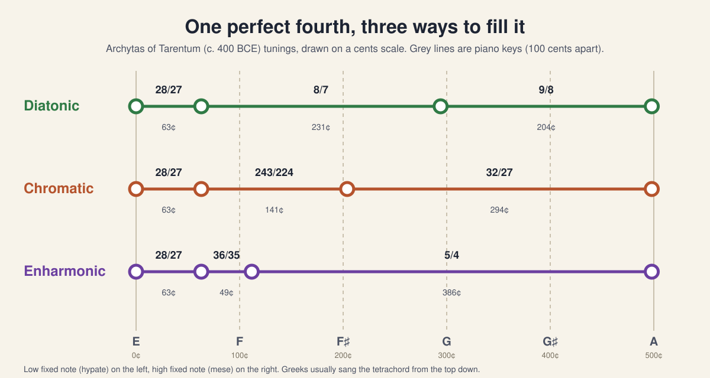
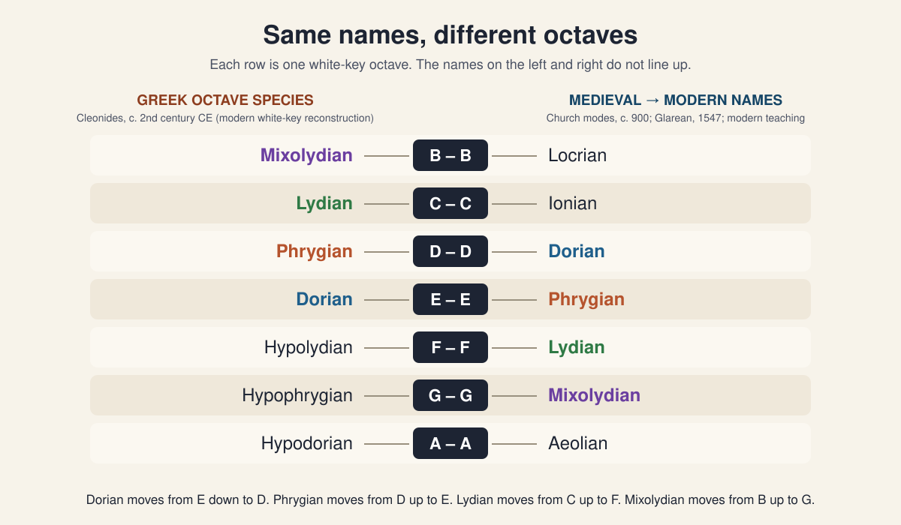
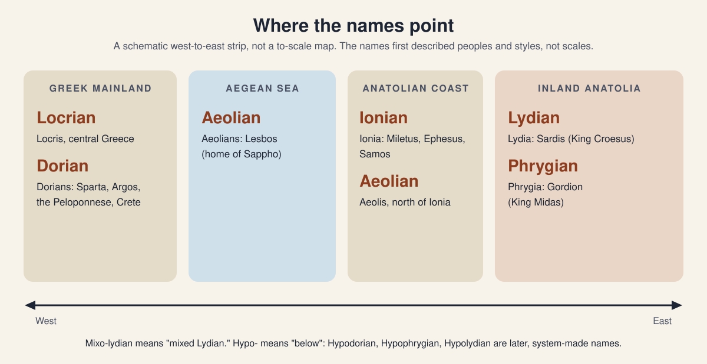
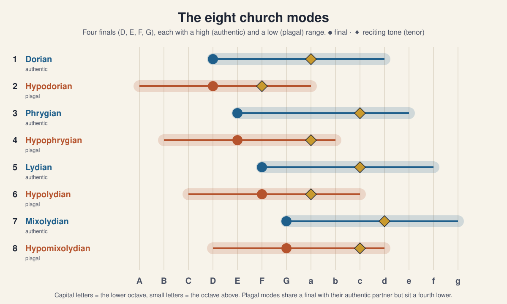

What was the unit?
The Greeks built scales from tetrachords, groups of four notes that span a perfect fourth. Medieval singers used a final note and a range. Modern musicians use a full scale on a tonic.
Music history lab · Grades 7–12 · About three class periods
Greek theorists, medieval monks, and jazz players all used the word Dorian, but they meant different scales. In this lesson you play reconstructed Greek scales on a piano, hear the notes that fall between its keys, and see how the names moved between Greece and today.
Sound plays only after you press a button. Use Esc or the Stop button to stop all audio.
Timeline
The big idea
Today a mode usually means one of seven scales you get by starting a major scale on a different note. That idea is only about 500 years old. The names Dorian, Phrygian, and Lydian are about 2,500 years old. Over that time the names were attached to scales several times, and each time they were attached in a different way. Keep three questions in mind:
The Greeks built scales from tetrachords, groups of four notes that span a perfect fourth. Medieval singers used a final note and a range. Modern musicians use a full scale on a tonic.
Greek theorists usually listed scales from high to low. Medieval and modern theory lists them from low to high. Turning a list around changes which name lands on which note.
Greek theorists described intervals as whole-number ratios or as “parts” of a tone. A modern piano divides the octave into 12 equal semitones. Some Greek notes have no key on the piano.
Turn and talk: If a word keeps its spelling but its meaning drifts (like awful, which once meant “full of awe”), is it still the same word? Ask the same question about “Dorian” as you work through the lesson.
Genera
The building block: the tetrachord
A Greek tetrachord spans a perfect fourth. The two outer notes are fixed (in our lab, E and A). The two inner notes are movable, and where you place them sets the genus (plural: genera):
About semitone, tone, tone, as on the white keys E F G A. This is the plainest of the three, and it is the only genus that survived into later Western music.
Semitone, semitone, then a leap of a minor third: about E F F♯ A. It has a bent, expressive sound.
Two steps of about a quarter tone each, then a leap of a major third: E, E↑, F, A. Aristoxenus considered it the most refined genus. A piano cannot play it.
The pins above the keys show where the Greek notes really fall. The highlighted keys are the nearest notes a piano can play.

Try it: Switch to Enharmonic and press Note by note. Count how many different pitches you hear in the Greek version and in the piano version. Then switch the tuning to Aristoxenus. Which genus comes out exactly on piano keys in his system? Why does that happen? (Hint: compare his “parts” with semitones.)
Octave species
From tetrachords to octaves
Join tetrachords end to end and you get the Greeks’ Greater Perfect System, two octaves from A to a′. An octave species is any one-octave window cut from that system. Each window contains the same notes but starts in a different place, so its pattern of steps is different. Cleonides named the seven windows. In the modern reconstruction, played on white keys, Greek Dorian runs from E to E, which modern musicians call Phrygian.
Read this as a reconstruction. Greek note names did not stand for fixed pitches. We place the system on white keys because its diatonic step pattern matches theirs, not because a Greek musician would have played “E.” We also tune the Greek version in ratios, so most of its notes differ slightly from the piano’s notes.

Comparison task: For Dorian, Phrygian, Lydian, and Mixolydian, write the Greek white-key octave, the modern white-key octave, and how many letters the name moved. Then pick Enharmonic Dorian. Which two piano keys would each have to hold two different Greek notes?
Ethos & places
Harmoniai, peoples, and character
The early harmoniai discussed by Plato and Aristotle were probably more than scales. Each was a recognizable regional style, which could include a tuning, a register, an instrument, rhythms, and typical melodic turns. Greek writers believed each one shaped the listener’s character (ethos). That is why philosophers argued about which ones young citizens should hear.

Be a skeptical listener. Ethos claims were philosophical and political arguments, not lab results. Plato wanted music that would train soldiers and guardians. Aristotle, his student, disagreed with him about Phrygian. And because the modern Dorian is a different scale, playing a “Dorian” track today does not test Plato’s claim.
Debate prompt: Play the Greek Dorian and Greek Phrygian octaves (section 03), then today’s Dorian. Does any of them sound “brave” or “enthusiastic” to you? How much of that impression comes from the scale, and how much from tempo, rhythm, instrument, and what you already expect?
Boethius
How the names crossed into Latin, and moved
Boethius (c. 480–524) was a Roman statesman who wrote De institutione musica, a Latin summary of Greek music theory drawn mainly from Nicomachus and Ptolemy. It became the standard music text of the medieval quadrivium. For Boethius, music was a mathematical subject about ratios. He separated musica mundana (the music of the cosmos), musica humana (harmony of body and soul), and musica instrumentalis (actual sounding music).
Boethius described the Greek modi mainly as transposition keys (tonoi) that rise from Hypodorian at the bottom to Hypermixolydian at the top. Church musicians, meanwhile, sorted chant into eight modes with four finals (D, E, F, G), a system shaped by the Byzantine oktōēchos. Around 900, Carolingian treatises (especially the group called Alia musica) attached the Greek names to those modes, in rising order.
EPhrygian DLydian CMixolydian Bnames step downDPhrygian ELydian FMixolydian Gnames step upThe names are in the same order in both lists, but the notes they sit on run in opposite directions. Historians still debate exactly why. Part of the cause is that Greek keys (tonoi) and Greek scale shapes (species) were confused, and part is that Greek theory listed scales from the top down while Latin theory listed them from the bottom up.

A church mode was identified by its final (the note the chant ends on), its range, and its reciting tone, the note psalm verses are chanted on. Starting from a different note was not the point.
Medieval theory allowed one movable note: B could be lowered to B♭ to avoid the tritone F–B. Lydian with B♭ sounds just like F major, more than 500 years before Glarean named “Ionian.”
Heinrich Glarean added Aeolian (final A) and Ionian (final C), with plagal partners, because real music already used them. He rejected the B mode because its fifth, B–F, is diminished. The name Locrian was attached to it later.
Seven modes
The modern system
Modern musicians treat a mode as a scale on a tonic that can be moved to any key. The fastest way to hear the seven modes is to keep the tonic fixed (play them in parallel) and change one note at a time. Going down the list, each mode lowers exactly one note of the mode above it. Each mode is recognized by its characteristic note, the note that separates it from plain major or minor.
| Modern mode | Modern white keys | Formula vs. major | Greek species with this name | Medieval meaning |
|---|---|---|---|---|
| Ionian | C–C | 1 2 3 4 5 6 7 | None. Ionian/Iastian was an old harmonia and later a key name. | Not used until Glarean (1547) |
| Dorian | D–D | 1 2 ♭3 4 5 6 ♭7 | E–E (= modern Phrygian) | Mode 1, final D |
| Phrygian | E–E | 1 ♭2 ♭3 4 5 ♭6 ♭7 | D–D (= modern Dorian) | Mode 3, final E |
| Lydian | F–F | 1 2 3 ♯4 5 6 7 | C–C (= modern Ionian) | Mode 5, final F, often with B♭ |
| Mixolydian | G–G | 1 2 3 4 5 6 ♭7 | B–B (= modern Locrian) | Mode 7, final G |
| Aeolian | A–A | 1 2 ♭3 4 5 ♭6 ♭7 | A–A as Hypodorian, reportedly once called “Aeolian” | Not used until Glarean (1547) |
| Locrian | B–B | 1 ♭2 ♭3 4 ♭5 ♭6 ♭7 | Cleonides used “Locrian” for A–A (= modern Aeolian) | Rejected as a mode |
Pattern hunt: Starting on Lydian, each step down the ladder lowers one note. Write the note that changes at each step on D. (Lydian → Ionian lowers G♯ to G. What comes next?) Why does the ladder have to stop at Locrian?
Tuning limits
The honest fine print
Most modern pianos use 12-tone equal temperament (12-TET): every semitone is exactly 100 cents, and every interval except the octave is slightly out of tune with its simple ratio. The compromise lets you play in every key. But each time this lesson “plays a Greek scale on piano,” the piano is rounding the Greek pitches. Here is what gets lost.
Play each sustained C–E dyad and listen for beats, a slow wobble in loudness. Beats come from the 5th harmonic of C clashing with the 4th harmonic of E.
Stack 12 pure 3:2 fifths and drop back down 7 octaves. You do not land on the C you started from. You land about 23.5 cents sharp. Equal temperament hides this gap by narrowing every fifth by about 2 cents.
STEAM connection: The cents formula is 1200 × log₂(ratio). Use it to check the 3:2 fifth (≈ 701.96¢) and the 5:4 third (≈ 386.31¢). How far is each from the piano’s 700¢ and 400¢? See Physics of Music for harmonics and beats.
Listen
Ear training
Every round plays a fresh example. Listen for the characteristic note over the drone, not for whether the scale sounds happy or sad.
Press New round to hear an example.
Score: 0 / 0
Play
Hands on the keys
Pick an exercise, then play it on the keyboard below. Click the keys, or use your computer keys: A is middle C, the row A S D F G H J K L ; plays white keys, and W E T Y U O P play black keys. A real piano works too. Use the on-screen keys to check your notes.
Comparison task: Play “Drunken Sailor” in D Dorian, then in D Aeolian. Only one note changes (B to B♭), and only in line 3. Describe the difference in one sentence without using “happy” or “sad.”
Compose
Composition studio
Rows are scale degrees 1 to 8, not fixed pitches. Write a melody once, then change the mode: the same shape takes on the steps of the new scale. Try the Greek octave species in the chromatic or enharmonic genus to hear sounds a piano cannot make.
Write an 8-beat phrase that starts and ends on degree 1. Land on degree 5 at the halfway point.
Choose a modern mode and put its characteristic note (Dorian 6, Lydian 4, Phrygian 2, Mixolydian 7) on a strong beat. Does the mode come through more clearly?
Play your phrase in modern Dorian, then in Greek Dorian. Change Greek Dorian to the enharmonic genus. Write two sentences on what changed and why.
Check
Exit ticket
Written exit ticket: In 3–5 sentences, explain to a guitarist friend why the “Dorian” they solo in is not Plato’s Dorian. Use at least three of these words: octave species, genus, final, Boethius, equal temperament.
The takeaway
“Dorian” referred to a people, then a style, then a Greek octave species (E–E), then a chant mode on D, and now a movable scale with a raised 6th. Each time you meet a mode name, ask who is using it and in which century.